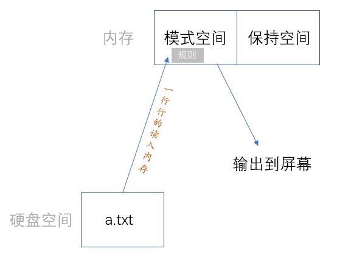

文件管理之四大模式
本小节主要阐述vim四大模式对文件的一系列操作
通常使用vim文本编辑器修改配置、写脚本文件..
vi是默认安装的,建议使用vim,yum install vim -y
命令行模式¶
打开文件就进入了此模式.
| 快捷键 | 效果 |
|---|---|
| $ (按shift + 4) | 光标移动到当前行的末尾 |
| 按数字0 | 光标移动到当前行的开头 |
| dd (按两下字母d) | 删除光标所在的那一行 |
| ndd (n为数字) | eg: 按下数字3,然后按两下d. 那么光标所在的那一行连同下方的两行会一同被删除掉！ 编辑器左下角会提示 少了3行 |
| u (按下字母小u) | 后退 (相当于windows下ctrl+z的回退操作) |
| ctrl + r | 前进 (相当于windows下ctrl+y的前进操作) 注意: mac下是control + r |
| yy (按两下字母y) | 复制光标所在的那一行 (相当于windows下ctrl+c) |
| nyy (n为数字) | eg: 按下数字3,然后按两下d. 那么光标所在的那一行连同下方的两行会一同被复制！ 编辑器左下角会提示 复制了3行 |
| p (按下字母小p) | 将已经复制的数据粘贴在光标所在行的下一行 (相当于windows下ctrl+v 可以多次粘贴) 若是多行的话 编辑器左下角会提示 多了n行 |
| P (按shift + p) | 将已经复制的数据粘贴在光标所在行的上一行 |
Ps: 奇淫技巧 -- 100000000yy复制整个文件内容; (n)yy + (n)p 快速增大文件.
光标定位¶
0 行头
$ 行尾
gg 文件第一行行头
G 文件最后一行行头
(n)G 文件的第n行行头
Ps: 扩展模式下 :n一样的定位到文件的第n行
H 此屏内容第一行行头
M 此屏内容中央行行头
L 此屏内容最后一行行头
文本编辑¶
(n)dd + p 剪切
(n)yy + p 复制粘贴
u 回退 ctrl + r / control + r 快进
关键字查找¶
/string 快速查找文件中所有的string单词(会高亮显示 按n下一个 按N上一个)
Ps: 设置环境 :set ic 后, 关键字的查找 会忽略大小写!
编辑/插入模式¶
输入a、i、o之一进入插入模式
a 在<光标之 后 >进行添加
i 在<光标之 前 >进行插入
o 在<当前光标所在行之下>开启新的一行
在编辑模式下, ctrl/control + w 是返回功能！
Ps: 使用 ESC键 返回命令行模式
可视块模式¶
严格来说还有一个 可视块模式, 主要用于批量加减注释的
前提: 注释的行需要整齐排列
在命令模式下,按 ctrl + v / control +v 进入可视块模式
批量删除注释¶
1> 上下键选中#号
2> 按下d键
批量添加注释¶
先将光标移动到需要加注释的第一行开头的位置
1> 上下键选中第一列
2> shift + i ,然后输入#号
3> 连续按两下ESC
Ps: shell脚本的缩进 control +v 上下选择缩进行 shift+i 四个空格先缩进第一行 两下esc 选择的行全部缩进..
扩展/末行模式¶
在命令行模式下输入冒号进入末行模式
保存退出¶
:wq 保存并退出
:w 保存后继续修改
:q! 修改的内容不想要了,文件恢复上一次保存时的样子.退出.
:wq! 与文件权限有关 分root管理员和普通用户dc两种情况讨论..
Ps: wq可以用x来代替！！
▲ 准备数据: root用户创建了一个a.txt文件,添加文本111,并修改其权限为 ---------- 没有人对其有任何权限.
但要注意,root用户可以为所欲为,可不用管文件权限是咋样的..
所以,可以发现root用户对a.txt文件使用查看文件内容的命令不会有权限问题.
而普通用户dc使用就会说权限不够. 因为dc对文件a.txt没有任何权限!
但不管是root还是dc都可以通过vim命令进入此文件.. 但是普通用户dc进入后显示的是空白,不会有任何内容！！
[root@localhost mnt]# touch a.txt
[root@localhost mnt]# echo 111 > a.txt
[root@localhost mnt]# ll
总用量 4
-rw-r--r-- 1 root root 4 7月 7 18:15 a.txt
[root@localhost mnt]# chmod 000 a.txt
[root@localhost mnt]# ll
总用量 4
---------- 1 root root 4 7月 7 18:15 a.txt
▲ 普通用户dc
# 可以发现a.txt文件是有内容的
[dc@localhost mnt]$ ll
总用量 4
---------- 1 root root 4 7月 7 18:15 a.txt
[dc@localhost mnt]$ cat a.txt
cat: a.txt: 权限不够
[dc@localhost mnt]$ tail a.txt
tail: 无法打开"a.txt" 读取数据: 权限不够
# 但通过vim打开啥也没有
# Ps: 若root用户修改a.txt文件权限为chmod o=r a.txt;
# dc用户是可以查看文件内容的,vim进入后会显示文件全部内容,但修改啥的不会成功.权限不够.
[dc@localhost mnt]$ vim a.txt
试图插入内容后,发现只能 :q! 其余的都无效.. 表明普通用户dc压根就对此文件不能造成任何影响.
▲ root用户
[root@localhost mnt]# cat a.txt
111
[root@localhost mnt]# vim a.txt
插入内容222后,使用 :wq! 强制保存退出.
[root@localhost mnt]# cat a.txt
111
222
[root@localhost mnt]# ll
总用量 4
---------- 1 root root 8 7月 7 18:21 a.txt
替换单词¶
%1,3,31,$s/被替换/替换成/gi
111111egon1111
egon222222 EGON 22eGoN
33333 egon33333 egon333
444xxx444xxxxx
55555xxx
6666egon666
#77777777
#88888888
敲黑板!! 可以用正则表达式去全文匹配我们要替换的文本！！(egon ^egon egon$)
▼ 将文件中的单词egon(忽略大小写,默认是区分大小写的)全部替换成yyds
egon222222 EGON 22eGoN ------> yyds222222 yyds 22yyds
:% s/egon/yyds/gi
解析:
% 代表所有行; s替换; /分隔符(用#、@都可以);
若不加g,则只会替换每一行第一个匹配到的egon..
若加g代表每一行中所有的egon都要替换掉. 有点正则里贪婪模式那味！
加i代表忽略大小写！
Ps: 也可以通过 :set ic ; :% s/egon/yyds/g 这两条命令达到同样的效果！！
▼ 将文件单独某一行(eg 第三行)里的egon全部替换成EGON
:3 s/egon/EGON/g
▼ 将文件连续几行(eg 第一行到第四行; 第三行到最后一行)里的egon全部替换成EGON
:1,4 s/egon/EGON/g ; :,4 s/egon/EGON/g 不指定开头,默认开头就是1
:3,$ s/egon/EGON/g
▼ 将全文中处于每行开头的egon替换成EGON
egon222222 egon -----> EGON222222 egon
:% s/^egon/EGON/g 其实这种需求下,加不加g效果都一样..
▼ 将全文中处于每行结尾的egon替换成EGON
egon222222 egon -----> egon222222 EGON
:% s/egon$/EGON/
▼ 可以达到批量删除注释的目的
:4,8 s/^#// 将4-8行的以＃开头的替换为空
Ps: 文件中共8行,若写的是 4,9 会报错 E16:无效的范围
读入文件/写文件¶
▼ 将文件3到5行的内容拷贝一份另存为a.txt
若a.txt已经事先存在,则需要 w! 强制另存为.. 是覆盖的效果!
:3,5 w /mnt/a.txt
:3,5 w! /mnt/a.txt
▼ 将其他文件的内容读取到当前文件光标所在行的下一行..
:r /mnt/a.txt
设置环境¶
:set nu 设置行号
:set nonu 取消设置行号
:set ic 忽略大小写
:set noic 取消忽略大小写
:set ai 自动缩进 (回车后的换行保持跟上一行相同的缩进)
:set noai 取消自动缩进
上述的修改都是临时修改,想要永久修改,需要修改配置文件
△ 对所有用户生效
vim /etc/vimrc 按G跳到文件最后一行 根据需求加入一下三行文本.
△ 只对当前的用户生效
vim ~/.vimrc 若此文件没有,在vim打开时会自动创建！同理,根据需求加入三行文本..
其他¶
: 3,7 d 删除文本3-7行内容
:2,4 co 11 将2到4行的内容复制到第11行的下面
文件对比¶
diff
<小于号代表左边边文件>大于号代表右边文件
diff - u 制作补丁文件, 通常会制作两个补丁文件!
patch 打补丁vimdiff 以vim方式打开两个文件对比, 高亮显示不同的内容
数据准备
diff¶
[root@localhost mnt]# diff a.txt b.txt
2c2,3
< 22
---
> 222
> 333
△ patch.diff"补丁文件"保存两个文件不一样的地方! (文件名随便命名)
这个补丁文件是以放在后面的那个文件(这里是b.txt)为准的.
所以这个补丁文件会用于给前面那个文件(这里是a.txt)打补丁.
[root@localhost mnt]# diff -u a.txt b.txt > patch.diff
[root@localhost mnt]# cat patch.diff
--- a.txt 2022-07-12 17:04:44.339129438 +0800
+++ b.txt 2022-07-12 17:04:46.035147935 +0800
@@ -1,2 +1,3 @@
111
-22
+222
+333
△ 安装patch包 -- 用于打补丁
通常在打补丁之前会制作两个补丁文件,便于文件打好补丁后回溯!
diff -u a.txt b.txt > patch_b.diff
diff -u b.txt a.txt > patch_a.diff
这样的话,a.txt文件通过patch_b.diff打好补丁后,还可以通过patch_a.diff还原!
[root@localhost mnt]# yum install patch -y
# 给a.txt打补丁 a.txt会变得跟b.txt一样
[root@localhost mnt]# patch a.txt patch.diff
patching file a.txt
[root@localhost mnt]# cat a.txt
111
222
333
vimdiff¶

Ps: control + ww 在命令行模式下实现两个文件之间切换!
vi/vim执行过程¶
解决vim非正常退出时文件保存的问题！
结合
5_文件管理之文件系统中的Q/A小节辅助理解..
有必要再次说明:
vim的原理是将文件内容一下子从硬盘全部读到内存中,在内存中改完后,再一次性全部覆盖硬盘的原文件..

Vim非正常退出, 编辑a.txt文件的时候断开连接(断网或断电), 重新连接服务器, 再次vim编辑文件.
会提示发现交换文件... Q退出.

△ 不想还原非正常退出时的修改,删除交换文件即可 rm -rf /mnt/.a.txt.swp
△ 还原非正常退出时的修改,命令行输入命令 vim -r a.txt然后进行编辑..
再次重新打开时,还提示发现交换文件,直接按d删除交换文件,再进入即可..
sed¶
stream editor 流式编辑器
主要擅长对文件的编辑操作, 我们可以事先定制好编辑文件的指令, 然后让sed自动完成对文件的整体编辑
sed的流式过程 ¶
Q: 为何sed会称作流式/sed流式的原理/sed流式编辑器的整体流程？
A: 一条sed命令是一个软件,一旦运行起来就会启用一个进程,进程会占用一块内存空间;
这块内存会自动进行一个隔断, 左边的称为模式空间、右边的称为保持空间(保持空间暂且不讨论);
sed处理的文件是放在硬盘上的,sed会一行行的读取文件的内容到模式空间;
一行行的按照事先制定的规则(定位+具体操作)处理,处理完后若模式空间有内容,会流到屏幕中进行显示.
具体来说:
step 1> 若此行不符合定位,将不会进行任何处理;
若此行符合定位,将会按照具体操作进行处理;
(所谓的处理 "p" 将所有行打印到屏幕中. "1,2s/egon/BIGEGON/g'" 对1到2行的内容进行替换)
step 2> 不管是否符合定位,最后若模式空间里有内容将会进行默认输出,流到屏幕当中!
(为何这样说,因为"d"的话,直接删除,这行内容就不会留存在模式空间.)
Ps: 上述过程不会改变硬盘中原有文件的内容!! 除非用了 -i 选项

sed与vim对比¶
Q: 什么时候用sed?
A: 成批次的处理; 处理大文件.
1> sed可以把处理文件的规则事先写好, 然后用同一套规则编辑多个文件;
而vim只能一个一个进行编辑
2> sed处理文件,一次只处理一行,即同一时间内存中只有文件的一行内容.
无论文件多大,都不会对内存造成过大的压力
命令使用¶
sed 选项 规则 文件路径
[选项]
-n 取消默认输出
-r 支持扩展正则元字符
-i 将处理规则应用到 文件 当中去,真正的完成了编辑, 可以简单理解成改变了输出流向.
-i 的底层原理:
将本应打印到屏幕的内容写入了一个临时文件,把原文件一删,把临时文件改名为原文件的名字, 速度非常快,看样子就像是覆盖了原文件.通常会在调试完毕确保没有问题后再加-i选项!
[规则] '定位/匹配+命令/具体操作'
不写定位代表定位所有行
行定位
1 定位到第一行
1,3 从第1行到第3行
正则表达式定位 -- / / 两个左斜杠进行包裹.
/egon/ 包含egon的行
/^egon/ 以egon开头的行
/egon$/ 以egon结尾的行
数字+正则表达式定位
1,8 1到8行
1,/egon/ 取从第1行到首次匹配到/egon/的行
具体操作
d
p
s/匹配内容/替换内容/gi -- s后面三个左斜杠
Ps: 命令可以用;号连接多条 如sed "1d;3d;5d" a.txt代表删除1,3,5行
[root@localhost mnt]# cat b.txt
egon1111
22222egon
3333egon33333
4444xxx44444
5555xxx55555xxxx555xxx
6666egon6666egon666egon
777Egon7777eGOn7777eGoN
【;分号连接多条命令】
▲ 将文件的第一行和第三行进行打印处理
[root@localhost mnt]# sed "1p;3p" b.txt
egon1111
egon1111
22222egon
3333egon33333
3333egon33333
4444xxx44444
5555xxx55555xxxx555xxx
6666egon6666egon666egon
777Egon7777eGOn7777eGoN
【-n 取消默认输出】
[root@localhost mnt]# sed -n "" b.txt
[root@localhost mnt]# sed -n "1p;3p" b.txt
egon1111
3333egon33333
【正则定位】
▲ 删除文件中以egon结尾的行
过程:
第一行进来后,正则定位/egon$/失败,直接默认输出;
第二行进来后,定位成功,按照具体的操作指令d直接干掉,没有默认输出了..
剩余行同理.
[root@localhost mnt]# sed "/egon$/d" b.txt
egon1111
3333egon33333
4444xxx44444
5555xxx55555xxxx555xxx
777Egon7777eGOn7777eGoN
Ps:
sed "/^egon/p" b.txt
sed "/egon/p" b.txt
sed "1,/egon$/d" b.txt 第一行到首次定位到以egon结尾的行全部删除
【s替换操作】
● 不忽略大小写,懒惰匹配(当前读入模式空间的行从左到右找到第一个egon就不往后面找了)
[root@localhost mnt]# sed "s/egon/EGON/" b.txt
EGON1111
22222EGON
3333EGON33333
4444xxx44444
5555xxx55555xxxx555xxx
6666EGON6666egon666egon
777Egon7777eGOn7777eGoN
● 不忽略大小写,全局匹配
[root@localhost mnt]# sed "s/egon/EGON/g" b.txt
EGON1111
22222EGON
3333EGON33333
4444xxx44444
5555xxx55555xxxx555xxx
6666EGON6666EGON666EGON
777Egon7777eGOn7777eGoN
● 忽略大小写,全局匹配
[root@localhost mnt]# sed "s/egon/EGON/gi" b.txt
EGON1111
22222EGON
3333EGON33333
4444xxx44444
5555xxx55555xxxx555xxx
6666EGON6666EGON666EGON
777EGON7777EGON7777EGON
【sed使用管道处理其他命令的结果】
[root@localhost mnt]# ifconfig | sed "s/ens33/eth0/"
eth0: flags=4163<UP,BROADCAST,RUNNING,MULTICAST> mtu 1500
inet 172.16.150.131 netmask 255.255.255.0 broadcast 172.16.150.255
inet6 fe80::20c:29ff:fe90:303e prefixlen 64 scopeid 0x20<link>
ether 00:0c:29:90:30:3e txqueuelen 1000 (Ethernet)
... ... ...
[root@localhost mnt]# ifconfig | sed -i "s/ens33/eth0/"
sed: 没有输入文件 # -i 选项作用目标是文件
awk¶
事实上awk是一门编程语言,可以独立完成很强大的操作..
主要擅长处理有规律的文本(eg/etc/passwd), 对其做一些格式化的处理!
命令构成¶
awk 选项 "规则" 文件路径
awk与sed相比,没有默认输出; awk强大在于段的概念(段可以应用于定位以及具体操作的命令).
[选项]
-F 指定分隔符,不写此选项默认就是以空格为分隔符
[规则] '定位+命令/具体操作'
注意: 规则得用 单引号 包裹...
没有定位则代表定位所有行
行定位
NR == 1 代表定位到第一行
NR>=3&&NR<=5 代表定位到第三行到第五行 &&并且
NR<=3||NR>=8 代表定位到第三行到第五行 ||或者
正则表达式定位 -- sed可以的awk也可以
$5 ~ /root/ 摘取读入内存的行的第6段进行正则定位,若第5段的内容包含root则定位成功
$5 !~ /root/ 定位第5段不包含root的行
$1=="root" 每一行进来后,只比较第一段. 注意root用双引号包裹起来了哦!
命令/具体操作
{print $3,$5} 打印定位的行以指定分隔符分隔的第3段和第5段的内容
awk内置的变量
NR 读入的是第一行,NR的值为1;读入的是第n行,NR的值为n;
$0 一整行的内容
NF 以-F分隔符分隔的段数
工作流程¶
[root@localhost mnt]# head -10 /etc/passwd > test.txt
[root@localhost mnt]# ls
test.txt
[root@localhost mnt]# cat test.txt
root:x:0:0:root:/root:/bin/bash
bin:x:1:1:bin:/bin:/sbin/nologin
daemon:x:2:2:daemon:/sbin:/sbin/nologin
adm:x:3:4:adm:/var/adm:/sbin/nologin
lp:x:4:7:lp:/var/spool/lpd:/sbin/nologin
sync:x:5:0:sync:/sbin:/bin/sync
shutdown:x:6:0:shutdown:/sbin:/sbin/shutdown
halt:x:7:0:halt:/sbin:/sbin/halt
mail:x:8:12:mail:/var/spool/mail:/sbin/nologin
operator:x:11:0:operator:/root:/sbin/nologin
step1: awk会读取文件的一行内容然后赋值给\(0
step2: 然后awk会以-F指定的分隔符将该行切分成n段,最多可以达到100段,第一段给\)1,第二段给$2,以此类推
step3: print输出该行的第一段和第三段
step4: 重复步骤1,2,3直到文件内容读完
Ps 此处定位的是所有行,所以每行的操作都需要经历上述流程.. (只会对定位的行进行具体的操作!!)
[root@localhost mnt]# awk -F: '{print $1,$3}' test.txt
root 0
bin 1
daemon 2
adm 3
lp 4
sync 5
shutdown 6
halt 7
mail 8
operator 11
行定位¶
▲ 定位文件的第三行
[root@localhost mnt]# awk -F: 'NR==3{print $1,$3}' test.txt
daemon 2
# 等同于 sed -n '3p' test.txt
[root@localhost mnt]# awk -F: 'NR==3{print $0}' test.txt
daemon:x:2:2:daemon:/sbin:/sbin/nologin
▲ 定位文件中的第三行到第五行
[root@localhost mnt]# awk -F: 'NR>=3&&NR<=5{print $1,$3}' test.txt
daemon 2
adm 3
lp 4
▲ 定位文件中行号小于等于3或者大于等于8的行
[root@localhost mnt]# awk -F: 'NR<=3||NR>=8{print $1,$3}' test.txt
root 0
bin 1
daemon 2
halt 7
mail 8
operator 11
▲ 定位文件中的3、5、7行
[root@localhost mnt]# awk -F: 'NR==3||NR==5||NR==7{print $1,$3}' test.txt
daemon 2
lp 4
shutdown 6
正则定位¶
▲ 定位文件中以nologin结尾的行
[root@localhost mnt]# awk -F: '/nologin$/{print $1}' test.txt
bin
daemon
adm
lp
mail
operator
▲ 定位文件中包含root的行
[root@localhost mnt]# awk -F: '/root/{print $0}' test.txt
root:x:0:0:root:/root:/bin/bash
operator:x:11:0:operator:/root:/sbin/nologin
▲ 定位文件中第5段包含root的行
[root@localhost mnt]# awk -F: '$5~/root/{print $0}' test.txt
root:x:0:0:root:/root:/bin/bash
▲ 定位文件中第5段不包含root的行
[root@localhost mnt]# awk -F: '$5!~/root/{print $0}' test.txt
bin:x:1:1:bin:/bin:/sbin/nologin
daemon:x:2:2:daemon:/sbin:/sbin/nologin
adm:x:3:4:adm:/var/adm:/sbin/nologin
lp:x:4:7:lp:/var/spool/lpd:/sbin/nologin
sync:x:5:0:sync:/sbin:/bin/sync
shutdown:x:6:0:shutdown:/sbin:/sbin/shutdown
halt:x:7:0:halt:/sbin:/sbin/halt
mail:x:8:12:mail:/var/spool/mail:/sbin/nologin
operator:x:11:0:operator:/root:/sbin/nologin
▲ 定位文件中第1段为root的行
[root@localhost mnt]# awk -F: '$1=="root"{print $0}' test.txt
root:x:0:0:root:/root:/bin/bash
▲ 综合考察: 定位文件第1到4行且第5段不包含root的行
[root@localhost mnt]# awk -F: 'NR>=1&&NR<=4&&$5!~/root/{print $0}' test.txt
bin:x:1:1:bin:/bin:/sbin/nologin
daemon:x:2:2:daemon:/sbin:/sbin/nologin
adm:x:3:4:adm:/var/adm:/sbin/nologin
以空格为分隔符¶
[root@localhost mnt]# cat a.txt
a b c
d e f g
h i g k l
[root@localhost mnt]# awk -F" " '{print $1,$2}' a.txt
a b
d e
h i
[root@localhost mnt]# awk '{print $1,$2}' a.txt
a b
d e
h i
▲ 取第一块网卡的IP地址
[root@localhost mnt]# ifconfig
ens33: flags=4163<UP,BROADCAST,RUNNING,MULTICAST> mtu 1500
inet 172.16.150.131 netmask 255.255.255.0 broadcast 172.16.150.255
inet6 fe80::20c:29ff:fe90:303e prefixlen 64 scopeid 0x20<link>
ether 00:0c:29:90:30:3e txqueuelen 1000 (Ethernet)
... ... ...
[root@localhost mnt]# ifconfig | awk 'NR==2{print $2}'
172.16.150.131
[root@localhost mnt]# ifconfig | awk 'NR==2{print $2}' | awk -F. '{print $1}'
172
NF的妙用¶
▲ 每一行的分隔段数不一样,打印行号和每行分隔的段数以及每行的最后一段和倒数第二段的内容
[root@localhost mnt]# cat b.txt
a:b:c
d:e
f:g:h:i:j
k:l:M:n
o:p
[root@localhost mnt]# awk -F: '{print NR,NF,$NF,$(NF-1)}' b.txt
1 3 c b
2 2 e d
3 5 j i
4 4 n M
5 2 p o
grep¶
grep更擅长过滤内容, < grep没有行定位的概念,作用的就是整个文件! >
grep 选项 "过滤规则/正则" 文件路径
[选项]
-n 在过滤出的每一行前面加上它在源文件中的行号
-i 忽略大小写
-l 如果文件的某一行符合过滤规则, 则只将文件名打印出来, 失败则不打印
-r 递归文件夹里的文件
Ps: 通常 -rl 一起用 grep -rl 'root' /etc
某个文件夹里有一堆文件,当忘记了某个配置项在哪个文件里时可以用.
-v 过滤掉, 其余的选项都是过滤出符合规则的行.
[过滤规则]
本质就是正则, 现目前只需要掌握 /egon/ /^egon/ /egon$/即可.
[root@localhost opt]# grep -rl 'egon' /etc
/etc/udev/hwdb.bin
[root@localhost opt]# grep -n 'bash$' /etc/passwd
1:root:x:0:0:root:/root:/bin/bash
44:onepiece:x:1000:1000:OnePiece:/home/onepiece:/bin/bash
45:dc:x:1001:1001::/home/dc:/bin/bash
[root@localhost opt]# ifconfig ens33 | grep 'netmask'
inet 172.16.150.131 netmask 255.255.255.0 broadcast 172.16.150.255
[root@localhost opt]# ps aux | grep "ssh"
root 1093 0.0 0.0 112984 392 ? Ss 7月11 0:00 /usr/sbin/sshd -D
root 1881 0.0 0.0 72552 48 ? Ss 7月11 0:06 /usr/bin/ssh-agent /bin...
root 32633 0.0 0.2 163888 2004 ? Ss 10:53 0:04 sshd: root@pts/1
root 41008 0.0 0.0 112824 988 pts/1 R+ 22:50 0:00 grep --color=auto ssh
# 等同于 ps aux | grep "[s]sh"
[root@localhost opt]# ps aux | grep "ssh" | grep -v "grep"
root 1093 0.0 0.0 112984 392 ? Ss 7月11 0:00 /usr/sbin/sshd -D
root 1881 0.0 0.0 72552 48 ? Ss 7月11 0:06 /usr/bin/ssh-agent /bin...
root 32633 0.0 0.2 163888 2004 ? Ss 10:53 0:04 sshd: root@pts/1
linux上查看所有的进程ps aux; 强制杀死某个进程 kill -9 进程号;
windows上查看进程并过滤 tasklist | findstr "WeChat.exe"; 杀死进程 taskkill /F /PID 进程号
文本处理三剑客 sed、awk、grep 在后续的shell编程里会详解它仨! (如果会系统学习shell编程的话)